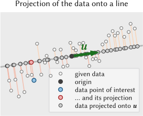
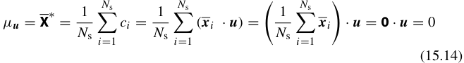
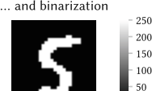
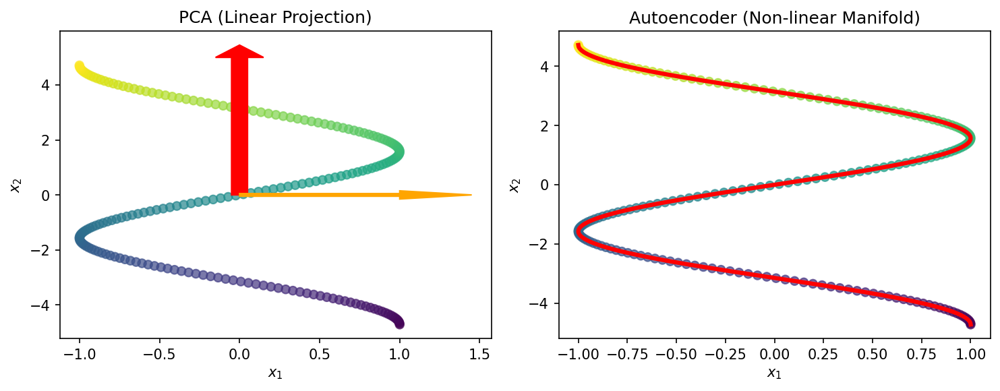
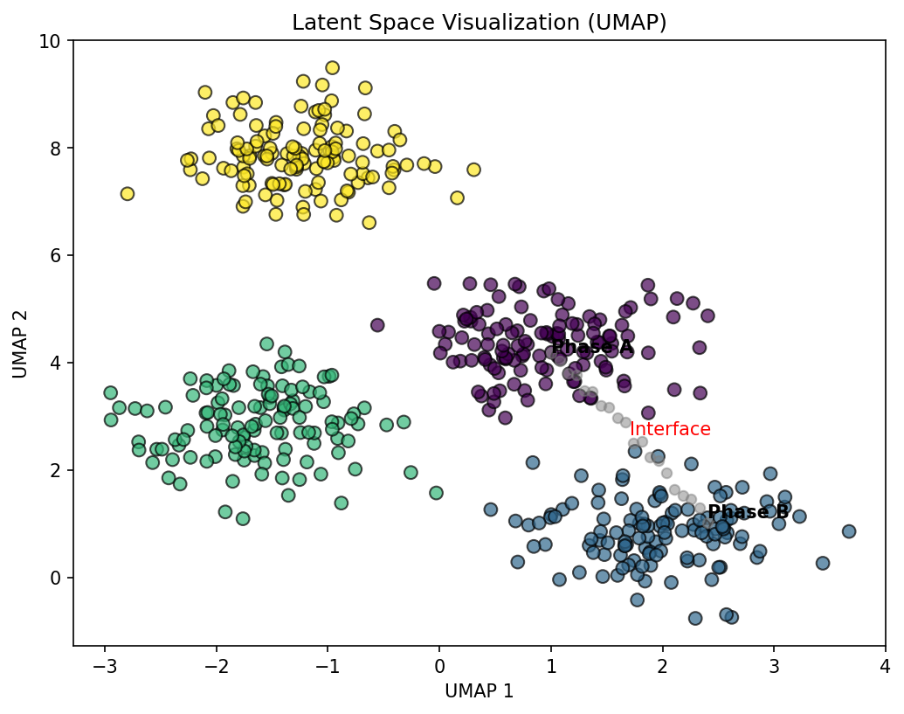

flowchart LR
A["Raw Spectrum<br>x ∈ ℝ²⁰⁴⁸"] --> B["Center<br>x - x̄"]
B --> C["Project onto<br>Eigenspectra V"]
C --> D["Score Vector<br>c ∈ ℝᴷ"]
D --> E["Reconstruct<br>x̂ = x̄ + Vc"]
E --> F["Denoised<br>Spectrum"]
style A fill:#2d5016,stroke:#4a8c2a,color:#fff
style D fill:#1a3a5c,stroke:#2a6a9c,color:#fff
style F fill:#5c1a1a,stroke:#9c2a2a,color:#fffMachine Learning in Materials Processing & Characterization
Unit 10: ML for Characterization Signals
Prof. Dr. Philipp Pelz
FAU Erlangen-Nürnberg


01. Learning Outcomes
After this unit, you will be able to:
- Describe the characteristics of 1D characterization signals (XRD, EELS, EDS, XPS, Raman) and why ML is needed
- Apply PCA to spectral data for dimensionality reduction and denoising
- Explain the architecture and training of autoencoders and their variants (DAE, CAE, VAE)
- Compare PCA and autoencoders for spectral compression and feature extraction
- Design a signal processing pipeline for hyperspectral materials data
02. Beyond Images: 1D Characterization Signals
- Most of our course so far: spatial data (micrographs, microstructure maps)
- But many instruments produce 1D spectral signals:
- XRD — X-ray Diffraction: crystal structure via Bragg peaks
- EELS — Electron Energy Loss Spectroscopy: bonding and electronic structure
- EDS — Energy Dispersive X-ray Spectroscopy: elemental composition
- XPS — X-ray Photoelectron Spectroscopy: surface chemistry and oxidation states
- Raman — Vibrational spectroscopy: molecular fingerprints
- Each technique produces a spectrum: intensity vs. energy (or angle, or wavenumber)
- Modern instruments collect millions of spectra per experiment (spectrum imaging)
03. The Nature of Characterization Signals
- High dimensionality: A single spectrum may have 1024, 2048, or 4096 channels
- Each spectrum is a point in \(\mathbb{R}^{2048}\)
- Sparse peaks: Most channels contain background; only a few contain signal
- Continuous backgrounds: Bremsstrahlung (EDS), plasmon tails (EELS), fluorescence
- Noise: Shot noise (Poisson) dominates at low dose; detector noise adds Gaussian contributions
- Variability: Peak positions shift with composition; peak shapes change with bonding
Spectra as Vectors
A spectrum with \(N\) channels is simply a vector \(\mathbf{x} \in \mathbb{R}^N\). All the linear algebra and ML tools we have learned apply directly — but the physical meaning of each “dimension” (an energy channel) matters for interpretation.
04. The Need for ML
Traditional Analysis Is Breaking Down
- Manual peak fitting is slow, subjective, and does not scale
- Fitting 10 peaks in 1 spectrum: feasible
- Fitting 10 peaks in 1,000,000 spectra: impossible
- Overlapping peaks make decomposition ambiguous
- Fe-L and Mn-L edges in EELS overlap at ~640 eV
- Ti-K\(\alpha\) and Ba-L\(\alpha\) overlap in EDS at ~4.5 keV
- Subtle spectral changes encode critical physics
- The Fe-L\(_{2,3}\) edge shape distinguishes Fe\(^{2+}\) from Fe\(^{3+}\)
- Peak shift of 0.3 eV indicates a change in oxidation state
- Batch effects: Instrument calibration drifts, detector aging, beam damage
05. Goals: Compression, Denoising, Phase ID
Three Core Tasks for ML on Spectra
- Compression: Reduce \(\mathbf{x} \in \mathbb{R}^{2048}\) to \(\mathbf{z} \in \mathbb{R}^{K}\) with \(K \ll 2048\)
- Store and transmit massive spectral maps efficiently
- Denoising: Recover the clean signal from noisy measurements
- Equivalent to faster acquisition or higher beam current — without the dose
- Phase Identification: Group similar spectra and identify distinct phases
- Automated chemical/structural mapping across entire specimens
- All three tasks are connected through dimensionality reduction
- If we find the right low-dimensional representation, compression, denoising, and clustering all follow naturally
Section 2: PCA for Spectra
Eigenspectra, Scree Plots, and Linear Denoising
07. PCA for Spectra
The Classical Tool for Spectral Decomposition (Sandfeld et al. 2024)
- Given \(N\) spectra, each with \(D\) channels, form the data matrix \(\mathbf{X} \in \mathbb{R}^{N \times D}\)
- PCA finds orthogonal directions of maximum variance in this \(D\)-dimensional space
- Each spectrum can be approximated as a linear combination of \(K\) basis vectors:
\[\mathbf{x}_i \approx \bar{\mathbf{x}} + \sum_{k=1}^{K} c_{ik} \, \mathbf{v}_k\]
- \(\bar{\mathbf{x}}\): mean spectrum (average over all \(N\) spectra)
- \(\mathbf{v}_k\): the \(k\)-th eigenvector of the covariance matrix (the \(k\)-th eigenspectrum)
- \(c_{ik}\): the score (coefficient) of spectrum \(i\) on component \(k\)
- Compression: Store only the \(K\) scores \(c_{ik}\) instead of the full \(D\) channels
08. The Basis Function View: Eigenspectra
- The eigenspectra \(\{\mathbf{v}_1, \mathbf{v}_2, \ldots, \mathbf{v}_K\}\) form an orthonormal basis
- Each eigenspectrum is a “building block” — a spectral shape that varies across the dataset
- The scores \(c_{ik} = \mathbf{v}_k^\top (\mathbf{x}_i - \bar{\mathbf{x}})\) are computed by simple inner products
- This is computationally cheap: once the eigenspectra are computed, projecting a new spectrum is a matrix-vector multiply
09. Interpreting Eigenspectra
- PC1 (first eigenspectrum): Typically resembles the mean spectrum
- Captures the dominant overall shape (background + major peaks)
- PC2, PC3: Capture the dominant variations
- Often correspond to specific chemical differences between phases
- Example: PC2 might show positive Fe peaks and negative Cr peaks (Fe vs. Cr variation)
- Higher PCs (\(k > K_{\text{signal}}\)): Capture noise
- Appear as random oscillations with no physical meaning

10. Intrinsic Dimensionality
- A 2048-channel spectrum lives in \(\mathbb{R}^{2048}\) — but how many dimensions does the data actually use?
- If the sample has 4 distinct phases, the spectra approximately span a 4-dimensional subspace
- The intrinsic dimensionality \(K\) is the number of independent spectral variations
- For most materials datasets: \(K \sim 3\text{--}20 \ll D = 2048\)
Rule of Thumb
The intrinsic dimensionality of a spectral dataset is typically close to the number of distinct phases or chemical environments in the sample, plus a few components for background variations and thickness effects.
11. Scree Plots: Choosing the Number of Components
How Many PCs to Keep? (Sandfeld et al. 2024)
- The scree plot shows the explained variance (eigenvalue) for each component
- Signal components have large eigenvalues; noise components have small, roughly equal eigenvalues

- The Elbow Rule: Keep components before the “elbow” where eigenvalues level off
- Cumulative variance: Often 95% or 99% of total variance is captured by \(K \sim 5\text{--}15\) components
- Alternative: Parallel analysis — compare eigenvalues against those from random data
12. Denoising via Reconstruction
Truncated PCA as a Filter (Sandfeld et al. 2024)
Algorithm:
- Compute eigenspectra from the dataset: \(\mathbf{V}_K = [\mathbf{v}_1, \ldots, \mathbf{v}_K]\)
- Project each noisy spectrum: \(\mathbf{c}_i = \mathbf{V}_K^\top (\mathbf{x}_i - \bar{\mathbf{x}})\)
- Reconstruct: \(\hat{\mathbf{x}}_i = \bar{\mathbf{x}} + \mathbf{V}_K \mathbf{c}_i\)
- The reconstruction \(\hat{\mathbf{x}}_i\) retains only the signal subspace — noise is discarded

- Equivalent to reducing acquisition time by 10x while maintaining chemical sensitivity
13. Think About This…
PCA Denoising: Free Lunch?
Question: If PCA denoising is so effective, why not always reduce acquisition time by 10x and denoise afterwards?
Hint: Think about what happens when a spectrum contains a feature that is unique — present in only one or two pixels of the map.
Consider:
- PCA eigenspectra are computed from the entire dataset
- Rare features may not contribute enough variance to be captured by the top-\(K\) components
- PCA denoising can erase rare phases — minority signals get projected away
- This is a fundamental tension: denoising vs. discovery
Key Insight
PCA denoising is excellent for known, common features but can suppress rare or unexpected signals. Always inspect the residuals \(\mathbf{x}_i - \hat{\mathbf{x}}_i\) for signs of discarded information.
14. PCA Limitations
The Linearity Constraint
- PCA assumes that spectral variations can be expressed as linear combinations
- This works well when: phases mix additively (Beer-Lambert law, EDS from thin sections)
- PCA fails when:
- Peak positions shift with composition (e.g., XRD peak shift with lattice parameter)
- Peak shapes change non-linearly (e.g., EELS fine structure with oxidation state)
- Backgrounds are multiplicative rather than additive
- PCs are orthogonal — but physical phases are not orthogonal
- PCs can have negative values, but spectra are non-negative
- Alternative: NMF (Non-negative Matrix Factorization) enforces \(\mathbf{V} \geq 0\), \(\mathbf{C} \geq 0\)
- These limitations motivate autoencoders: non-linear generalizations of PCA
15. Summary: PCA for Spectra
| Aspect | PCA |
|---|---|
| Type | Linear dimensionality reduction |
| Speed | Very fast (SVD or eigendecomposition) |
| Solution | Unique, deterministic |
| Interpretation | Eigenspectra = orthogonal basis functions |
| Denoising | Truncated reconstruction |
| Compression | Store \(K\) scores instead of \(D\) channels |
| Limitation | Cannot handle non-linear variations |
When to use PCA:
- As the first step in any spectral analysis pipeline
- When variations are approximately linear (additive mixing)
- When you need fast, reproducible results
- For denoising large spectral maps
Section 3: Autoencoders for Signals
Non-linear Compression, Denoising, and Feature Extraction
17. Autoencoder Concept
A Neural Network That Learns to Compress (Sandfeld et al. 2024)
- An autoencoder (AE) is a neural network trained to reconstruct its own input
- The identity function \(f(\mathbf{x}) = \mathbf{x}\) is trivial — so we add a bottleneck
- The network must learn a compressed representation \(\mathbf{z}\) that captures the essential information
\[\mathbf{z} = f_{\text{enc}}(\mathbf{x}; \theta_{\text{enc}}) \quad \quad \hat{\mathbf{x}} = f_{\text{dec}}(\mathbf{z}; \theta_{\text{dec}})\]
- If \(\dim(\mathbf{z}) \ll \dim(\mathbf{x})\), the AE must discover meaningful features
- With linear activations and one hidden layer, an AE recovers PCA (Sandfeld et al. 2024)
- With non-linear activations, it learns more powerful representations
18. AE Architecture: The Hourglass
flowchart LR
subgraph Encoder
I["Input<br>2048 channels"] --> H1["Dense 512<br>ReLU"]
H1 --> H2["Dense 128<br>ReLU"]
H2 --> H3["Dense 32<br>ReLU"]
end
subgraph Bottleneck
H3 --> Z["Latent z<br>dim = 8"]
end
subgraph Decoder
Z --> H4["Dense 32<br>ReLU"]
H4 --> H5["Dense 128<br>ReLU"]
H5 --> H6["Dense 512<br>ReLU"]
H6 --> O["Output<br>2048 channels"]
end
style I fill:#2d5016,stroke:#4a8c2a,color:#fff
style Z fill:#8B0000,stroke:#cc3333,color:#fff
style O fill:#2d5016,stroke:#4a8c2a,color:#fff- Encoder \(f_{\text{enc}}\): Progressively reduces dimensionality (2048 → 512 → 128 → 32 → 8)
- Bottleneck \(\mathbf{z}\): The latent representation — the “compressed DNA” of the spectrum
- Decoder \(f_{\text{dec}}\): Mirrors the encoder, reconstructing from the latent code (8 → 32 → 128 → 512 → 2048)
19. Why the Bottleneck?
- Without a bottleneck, the network would learn the identity function — trivial and useless
- The bottleneck creates an information bottleneck: the network must decide what to keep and what to discard
- What gets kept: systematic, recurring patterns — peaks, backgrounds, spectral shapes shared across the dataset
- What gets discarded: random, non-repeating variations — noise, detector artifacts, cosmic rays
- The bottleneck size is a hyperparameter:
- Too large: noise passes through (undercomplete but still noisy)
- Too small: signal is lost (over-compressed)
- Just right: captures the intrinsic dimensionality
20. Non-linearity: The Power of AE vs PCA
- PCA: Finds the best linear subspace (a hyperplane)
- AE: Finds the best non-linear manifold (a curved surface)
- Example — XRD peak shift:
- As lattice parameter \(a\) increases, the (111) peak shifts to lower \(2\theta\)
- PCA needs multiple components to approximate this shift
- An AE learns: “one latent variable controls peak position” — direct physical meaning

- Non-linearity lets the AE learn physically meaningful latent variables
21. Training: Reconstruction Loss
- The training objective is to minimize the reconstruction error:
\[\mathcal{L}(\theta) = \frac{1}{N} \sum_{i=1}^{N} \|\mathbf{x}_i - \hat{\mathbf{x}}_i\|^2\]
- This is the mean squared error (MSE) between input and output spectra
- Training is unsupervised: no labels needed — the spectrum itself is the target
- Optimization: Adam optimizer, mini-batch gradient descent
- Training on \(10^5\)–\(10^6\) spectra typically takes minutes on a GPU
- Alternative losses:
- Poisson negative log-likelihood: Better for photon-counting data
- Spectral angle distance: Focuses on spectral shape, not intensity
22. Latent Space Properties
- The latent variables \(\mathbf{z}\) often develop physically interpretable meanings during training
- Examples of latent-physical correlations:
- \(z_1 \leftrightarrow\) specimen thickness (controls overall intensity)
- \(z_2 \leftrightarrow\) Fe/Cr ratio (controls relative peak heights)
- \(z_3 \leftrightarrow\) oxidation state (controls edge fine structure)
- These correlations are emergent — not programmed, but discovered by the network
- The latent space can be used for:
- Clustering: Group spectra by latent coordinates
- Visualization: Plot \(z_1\) vs. \(z_2\) as a chemical map
- Interpolation: Generate intermediate spectra by moving through latent space
23. Denoising Autoencoders (DAE)
Learning the Clean Manifold (McClarren 2021)
- Standard AE: Input = clean spectrum, Target = clean spectrum
- Denoising AE: Input = noisy spectrum, Target = clean spectrum
\[\mathcal{L}_{\text{DAE}} = \frac{1}{N}\sum_{i=1}^{N} \|\mathbf{x}_i^{\text{clean}} - f_{\text{dec}}(f_{\text{enc}}(\mathbf{x}_i^{\text{clean}} + \boldsymbol{\eta}_i))\|^2\]
- The noise \(\boldsymbol{\eta}_i\) can be:
- Gaussian: \(\eta \sim \mathcal{N}(0, \sigma^2)\)
- Poisson: Resample from \(\text{Poisson}(\mathbf{x}_i^{\text{clean}})\)
- Masking: Randomly zero out spectral channels
- The DAE learns to project noisy spectra back onto the clean data manifold
DAE vs. PCA Denoising
Both discard noise by projecting onto a low-dimensional representation. But a DAE explicitly trains on noisy-clean pairs, making it more robust when the noise model is known. PCA denoising is implicit — it assumes noise is in the discarded components.
24. DAE Example: EELS Spectra
Denoising the Fe-L\(_{2,3}\) Edge
- Problem: At low dose, the EELS fine structure that distinguishes Fe\(^{2+}\) from Fe\(^{3+}\) is buried in noise
- Approach:
- Train a DAE on simulated Fe-L edge spectra with known oxidation states
- Add Poisson noise at realistic dose levels during training
- Apply trained DAE to experimental spectra pixel-by-pixel
- Result: Clear Fe\(^{2+}\)/Fe\(^{3+}\) discrimination at 10x lower dose than conventional analysis
25. Convolutional Autoencoders for Spectra
- Standard AEs use fully connected (dense) layers — every channel connects to every neuron
- Problem: Dense layers do not know that nearby channels are related
- 1D Convolutional AE: Replace dense layers with 1D convolution + pooling
- Advantages:
- Shift invariance: A peak at 640 eV is recognized the same way as at 650 eV
- Fewer parameters: Weight sharing across the spectral axis
- Local feature detection: Learns peak shapes, edge onsets, and local patterns
- Architecture: Input → [Conv1D → ReLU → MaxPool1D] × 3 → Latent → [ConvTranspose1D → ReLU] × 3 → Output
- Particularly effective for XRD and Raman where peak shapes are well-defined
26. Variational Autoencoders (VAE)
- Standard AE: The latent space \(\mathbf{z}\) has no structure — just whatever the network finds useful
- VAE: The encoder outputs a probability distribution \(q(\mathbf{z}|\mathbf{x}) = \mathcal{N}(\boldsymbol{\mu}, \boldsymbol{\sigma}^2)\)
- Training loss adds a KL divergence term:
\[\mathcal{L}_{\text{VAE}} = \underbrace{\|\mathbf{x} - \hat{\mathbf{x}}\|^2}_{\text{reconstruction}} + \beta \cdot \underbrace{D_{\text{KL}}(q(\mathbf{z}|\mathbf{x}) \| p(\mathbf{z}))}_{\text{regularization}}\]
- The KL term encourages the latent space to be smooth and continuous
- Nearby points in latent space produce similar spectra
- You can sample from the latent space to generate new, realistic spectra
- Materials application: Generate synthetic training spectra, explore phase space, uncertainty estimation
27. PCA vs. Autoencoder: Head-to-Head
| Feature | PCA | Autoencoder |
|---|---|---|
| Linearity | Linear only | Non-linear |
| Speed | Very fast (SVD) | Slower (GPU training) |
| Solution | Unique, deterministic | Depends on initialization |
| Interpretability | Eigenspectra are intuitive | Latent space needs probing |
| Data requirement | Works with small datasets | Needs more data |
| Peak shifts | Needs many components | Handles naturally |
| Denoising | Truncated reconstruction | DAE with noise model |
| Generative | No | Yes (VAE) |
Practical recommendation:
- Start with PCA — it is fast, unique, and gives you a baseline
- Switch to AE when PCA reconstruction error plateaus or non-linear effects are important
- Use DAE when you have a good noise model
- Use VAE when you need generative capabilities or uncertainty
28. Think About This…
The Latent Space as a Chemical Compass
Question: You train an autoencoder with a 2D latent space on EDS spectra from a ternary alloy (Fe-Cr-Ni). You plot the latent coordinates for each pixel and color them by known composition. What do you expect to see?
Hint: The alloy has three independent compositional degrees of freedom, but they sum to 100%.
Consider:
- Three elements with the constraint \(c_{\text{Fe}} + c_{\text{Cr}} + c_{\text{Ni}} = 1\) means two independent compositional variables
- A 2D latent space should be sufficient to capture this variation
- You would expect the latent space to look like a triangle (the ternary phase diagram!)
- The autoencoder has rediscovered the Gibbs triangle — without being told anything about thermodynamics
- Follow-up: What if you used a 1D latent space? What would be lost?
29. Anomaly Detection with Autoencoders
- Train the AE on “normal” spectra from the expected phases
- For a new spectrum \(\mathbf{x}\), compute the reconstruction error: \(e = \|\mathbf{x} - \hat{\mathbf{x}}\|^2\)
- If \(e > \tau\) (threshold), the spectrum is anomalous — it does not fit the learned representation
- Materials applications:
- Detecting unexpected phases or contamination
- Flagging instrument malfunctions (detector artifacts, calibration drift)
- Finding rare events (nano-precipitates, grain boundary segregation)

- Unlike supervised anomaly detection, this requires no labels — only knowledge of what “normal” looks like
30. Summary: Autoencoders for Spectra
- Autoencoders are the non-linear generalization of PCA for spectral data
- Key variants:
- Standard AE: Compression and feature extraction
- DAE: Denoising with explicit noise models
- CAE: 1D convolutions for shift-invariant peak detection
- VAE: Probabilistic latent space for generation and uncertainty
- The latent space is the central concept — it provides:
- A compressed representation for storage
- A denoised representation for analysis
- A feature space for clustering and classification
- A basis for anomaly detection
- Best practice: Always compare AE results against PCA as a baseline
Section 4: Practical Signal Processing
Pipelines, Hyperspectral Data, and Transfer Learning
32. Signal Processing Workflow
flowchart TD
A["Raw Spectra<br>(N × D)"] --> B["Preprocessing"]
B --> B1["Background Subtraction"]
B --> B2["Normalization"]
B --> B3["Alignment / Calibration"]
B1 & B2 & B3 --> C["Dimensionality Reduction"]
C --> C1["PCA"]
C --> C2["Autoencoder"]
C1 & C2 --> D["Latent Representation<br>(N × K)"]
D --> E1["Clustering<br>(Phase Maps)"]
D --> E2["Anomaly Detection<br>(Rare Phases)"]
D --> E3["Classification<br>(Known Phases)"]
style A fill:#2d5016,stroke:#4a8c2a,color:#fff
style D fill:#1a3a5c,stroke:#2a6a9c,color:#fff
style E1 fill:#5c1a1a,stroke:#9c2a2a,color:#fff
style E2 fill:#5c1a1a,stroke:#9c2a2a,color:#fff
style E3 fill:#5c1a1a,stroke:#9c2a2a,color:#fff- Preprocessing: Prepare spectra for ML (remove artifacts, normalize, align)
- Dimensionality Reduction: PCA or AE to extract the latent representation
- Downstream Analysis: Clustering, anomaly detection, or classification in latent space
33. Normalization Strategies
Why Normalize?
- Raw spectral intensities depend on dose, dwell time, specimen thickness — not just chemistry
- Without normalization, PCA/AE will learn intensity variations, not chemical variations
Common Strategies
- Total-count normalization: \(\mathbf{x}' = \mathbf{x} / \sum_j x_j\)
- Makes all spectra have unit area — removes thickness/dose effects
- Peak-height normalization: \(\mathbf{x}' = \mathbf{x} / \max_j x_j\)
- Makes the strongest peak equal to 1 — preserves relative peak ratios
- Standard Normal Variate (SNV): \(\mathbf{x}' = (\mathbf{x} - \bar{x}) / s_x\)
- Centers and scales each spectrum individually — common in chemometrics
- Min-max per channel: Normalize each energy channel across the dataset
- Ensures all channels contribute equally to the loss
34. Multi-Spectral and Hyperspectral Data
The Data Cube: \((x, y, E)\)
- In spectrum imaging, every pixel \((x, y)\) has an associated spectrum \(\mathbf{s}(E)\)
- The result is a 3D data cube: two spatial dimensions + one spectral dimension
- Typical sizes:
- STEM-EDS: \(256 \times 256\) pixels \(\times\) \(2048\) channels \(= 134\) million values
- STEM-EELS: \(100 \times 100\) pixels \(\times\) \(1024\) channels \(= 10\) million values
- Naive approach: Unfold to a \(N_{\text{pixels}} \times D_{\text{channels}}\) matrix, apply PCA/AE per spectrum
- Better approach: Exploit spatial correlations — neighboring pixels likely have similar spectra

35. Spatial-Spectral Autoencoders
- Idea: Use spatial context to improve spectral analysis
- Architecture: Instead of encoding a single spectrum \(\mathbf{x}(x,y)\), encode a patch of spectra around each pixel
- Input: \(P \times P \times D\) (e.g., \(5 \times 5 \times 2048\))
- Use 3D convolutions or factored 2D spatial + 1D spectral convolutions
- Benefits:
- Neighboring pixels provide implicit averaging (denoising)
- Spatial context helps distinguish interface regions from bulk phases
- Can learn spatially correlated features (e.g., core-shell structures)
- Trade-off: Spatial smoothing can blur sharp interfaces — choose patch size carefully
36. Learning the Peak Dictionary: End-Members
- Goal: Decompose every spectrum as a non-negative mixture of “pure” end-member spectra
\[\mathbf{x}_i \approx \sum_{k=1}^{K} a_{ik} \, \mathbf{e}_k, \quad a_{ik} \geq 0, \quad \mathbf{e}_k \geq 0\]
- This is Non-negative Matrix Factorization (NMF) — physically more meaningful than PCA
- End-members \(\mathbf{e}_k\) resemble actual spectra of pure phases
- Autoencoder variant: The decoder weights, if constrained to be non-negative, act as a learned dictionary of end-member spectra
- Advantage over database matching: Learns end-members from the data — accounts for instrument-specific peak shapes and backgrounds
37. Signal Separation: Unmixing Overlapping Peaks
- Problem: At a grain boundary between phase A and phase B, the measured spectrum is a mixture
- Linear unmixing: \(\mathbf{x} = \alpha \, \mathbf{e}_A + (1-\alpha) \, \mathbf{e}_B + \boldsymbol{\eta}\)
- Estimate \(\alpha\) from the latent space position
- Non-linear unmixing: When mixing is not additive
- Multiple scattering in EELS
- Absorption effects in thick EDS specimens
- Autoencoders handle this naturally through non-linear decoder
- Application: Sub-pixel composition mapping
- Even when the beam probe is larger than the feature, unmixing recovers fractional compositions
38. Transfer Learning for Signals: Synthetic to Real
- Problem: Real spectral datasets for training may be scarce or lack ground truth labels
- Solution: Pre-train on simulated spectra, fine-tune on real data
- Simulation tools:
- XRD: CrystalDiffract, VESTA, Rietveld simulation
- EELS: FEFF, DFT-based calculations
- EDS: Monte Carlo (CASINO, DTSA-II)
- Pipeline:
- Simulate spectra for all expected phases with realistic parameters
- Add synthetic noise (Poisson + readout noise)
- Pre-train DAE or classifier on simulated data
- Fine-tune on a small number of real experimental spectra
- Key: The simulation must capture the relevant physics — peak shapes, backgrounds, artifacts
39. Robustness to Instrumental Shifts
- Real instruments are not perfectly stable:
- Energy calibration drift (peak positions shift over time)
- Gain changes (detector sensitivity varies)
- Contamination buildup (affects background)
- A model trained on Monday’s data may fail on Friday’s data
- Strategies for robustness:
- Data augmentation: During training, randomly shift, scale, and broaden spectra
- Calibration layer: Learn an alignment transformation as part of the model
- Domain adaptation: Align feature distributions between source and target instruments
- Convolutional architectures: Inherently more robust to small shifts (shift equivariance)
40. Summary: Signal Processing Pipeline
| Stage | Method | Purpose |
|---|---|---|
| Preprocessing | Normalization, alignment | Remove instrumental effects |
| Reduction | PCA or AE | Compress to latent representation |
| Denoising | Truncated PCA or DAE | Remove noise while preserving signal |
| Decomposition | NMF or constrained AE | Identify end-member spectra |
| Clustering | K-means, UMAP in latent space | Map spatial phase distribution |
| Anomaly detection | Reconstruction error | Flag unexpected features |
41. Non-Negative Matrix Factorization (NMF)
The Natural Choice for Spectra
Constraint: Spectra \(\mathbf{X}\) and their components must be non-negative:
\[\mathbf{X} \approx \mathbf{W}\mathbf{H} \quad \text{s.t. } W_{ik}, H_{kj} \ge 0\]
| Matrix | Characterization Meaning |
|---|---|
| \(\mathbf{X}\) (\(N \times D\)) | Raw dataset (spatial pixels \(\times\) energy channels) |
| \(\mathbf{W}\) (\(N \times K\)) | Abundance maps (spatial distribution of each phase) |
| \(\mathbf{H}\) (\(K \times D\)) | End-member spectra (pure phase signatures) |
Why NMF beats PCA for spectra:
- Interpretability: Components (H) are “real” spectra, not abstract “variations”
- Physicality: No negative concentrations or negative photon counts
- Parts-based: Naturally learns additive “building blocks” of the signal
Key takeaways:
- The latent space is the universal interface between raw spectra and scientific insight
- Choose the right normalization for your data type
- Always validate against known references and physical expectations
Section 5: Case Studies
From XRD Phase ID to Real-time Signal Monitoring
42. Case Study: Automatic XRD Phase Identification
Problem
- Given a noisy XRD pattern, identify which crystallographic phases are present
- Traditional: Match peaks against the ICDD database (manual, slow, error-prone for mixtures)
ML Approach
- Train an autoencoder on simulated XRD patterns for all candidate phases
- Encode the unknown pattern into latent space
- Use nearest-neighbor classification or clustering in latent space
Results
- Handles multi-phase mixtures by decomposition in latent space
- Robust to preferred orientation and peak broadening (which confuse database matching)
- Can detect amorphous phases as anomalies (high reconstruction error)

43. Case Study: EELS Spectrum Imaging — Fe\(^{2+}\)/Fe\(^{3+}\) Mapping
Problem
- Map the spatial distribution of iron oxidation states at nanometer resolution
- The Fe-L\(_{2,3}\) white line ratio (\(L_3/L_2\)) and onset energy differ between Fe\(^{2+}\) and Fe\(^{3+}\)
ML Approach
- Train a denoising autoencoder on simulated Fe-L edges for both oxidation states
- Apply to experimental EELS spectrum image pixel by pixel
- Use the latent space to map oxidation state continuously (not just binary classification)
Impact
- Enables oxidation state mapping at 5x lower dose than conventional analysis
- Captures continuous gradients (e.g., mixed-valence regions at interfaces)
- Validated against reference spectra from known Fe\(^{2+}\) and Fe\(^{3+}\) standards
44. Case Study: Large-Scale EDS Maps
The Scale Challenge
- Modern SEM/STEM-EDS: \(512 \times 512\) pixels, 2048 channels = ~500,000 spectra
- Multiple fields of view → millions of spectra per sample
PCA-Based Pipeline
- Apply PCA to the unfolded data cube (\(N \times D\) matrix)
- Denoise: Reconstruct using top-\(K\) components (typically \(K = 10\text{--}20\))
- Cluster in score space using K-means
- Map cluster assignments back to spatial coordinates → phase map
Results
- Denoised maps reveal trace elements below the raw noise floor
- Phase maps identify 5-8 distinct phases automatically
- Processing time: Minutes on a standard workstation (PCA is fast!)

45. Clustering in Latent Space: UMAP Visualization
From Latent Codes to Phase Maps (Sandfeld et al. 2024)
- After dimensionality reduction (PCA or AE), each spectrum is a point \(\mathbf{z}_i \in \mathbb{R}^K\)
- UMAP (Uniform Manifold Approximation and Projection) projects \(K\)-dimensional latent codes to 2D for visualization
- Preserves both local and global structure (better than t-SNE for this)

- Clusters in UMAP space correspond to distinct material phases
- Bridges between clusters indicate transition regions (interfaces, diffusion zones)
- Outliers flag anomalies or rare phases
46. Discovering New Phases with Anomaly Detection
When the Model Says “I Don’t Know”
- Train an autoencoder on spectra from known phases
- Apply it to a new sample — most spectra reconstruct well
- High reconstruction error pixels indicate spectra that differ from all known phases
- Discovery workflow:
- Map reconstruction error spatially → anomaly map
- Extract spectra from high-error regions
- Inspect these spectra manually → identify the unknown phase
- Add to the training set and retrain
- Example: Discovery of an unexpected intermetallic compound at a diffusion couple interface
- The AE was trained on the two base metals
- High reconstruction error at the interface revealed a third phase
47. Real-time Signal Monitoring
Closing the Loop: ML During Acquisition
- Conventional workflow: Acquire → Store → Analyze offline
- ML-enabled workflow: Acquire → Analyze in real time → Adjust acquisition
- Applications:
- Monitor reconstruction error during scanning — stop early when all phases are mapped
- Detect beam damage by tracking spectral changes in real time
- Adaptive acquisition: Spend more time on interesting regions, less on uniform areas
- Requirements:
- Model must be fast enough for real-time inference (PCA: trivially fast; small AE: ~ms per spectrum)
- Must handle streaming data (incremental PCA, online AE updates)
The Future Is Adaptive
Combining real-time ML with instrument control creates self-driving microscopes that autonomously explore materials, guided by the scientific questions encoded in the ML model. This is the topic of Unit 11.
48. Exercise Preview
Hands-on: PCA and Autoencoder for EDS Spectra
Part 1: PCA Analysis
- Load a simulated EDS spectrum image (100 \(\times\) 100 pixels, 1024 channels, 3 phases)
- Compute PCA and plot the scree plot — determine the intrinsic dimensionality
- Reconstruct the data using \(K = 3, 5, 10\) components — compare denoised spectra
- Plot PCA score maps and identify the three phases
Part 2: Autoencoder
- Build a fully-connected autoencoder with bottleneck size 4
- Train on the same dataset — compare reconstruction loss vs. PCA
- Visualize the latent space and compare clustering to PCA scores
- Introduce an “unknown” phase in a few pixels — use reconstruction error to detect it
Part 3: Denoising
- Add Poisson noise at various dose levels — compare PCA and DAE denoising
49. Summary and Key Takeaways
What We Learned Today
- Characterization signals (XRD, EELS, EDS, XPS, Raman) are high-dimensional but lie on low-dimensional manifolds
- PCA provides fast, linear dimensionality reduction — excellent for denoising and compression, but limited to linear variations
- Autoencoders extend PCA to non-linear settings — handling peak shifts, shape changes, and complex backgrounds
- Denoising autoencoders explicitly learn to map noisy spectra to clean ones — enabling lower-dose characterization
- The latent space is the universal interface: it enables compression, denoising, clustering, anomaly detection, and visualization
- Practical pipelines require careful normalization, validation, and robustness to instrumental shifts
Next unit: Unit 11 — Automation in Microscopy (closing the loop)
50. References
Core References
Further Reading
- Kingma & Welling (2014): “Auto-Encoding Variational Bayes” — the original VAE paper
- Lee & Seung (1999): “Learning the parts of objects by non-negative matrix factorization” — NMF
- McInnes et al. (2018): “UMAP: Uniform Manifold Approximation and Projection” — dimensionality reduction for visualization
Software
- HyperSpy: Open-source Python library for multi-dimensional spectral data analysis
- scikit-learn: PCA, NMF, K-means implementations
- PyTorch / TensorFlow: Autoencoder implementations
McClarren, Ryan G. 2021. Machine Learning for Engineers: Using Data to Solve Problems for Physical Systems. Springer.
Neuer, Michael et al. 2024. Machine Learning for Engineers: Introduction to Physics-Informed, Explainable Learning Methods for AI in Engineering Applications. Springer Nature.
Sandfeld, Stefan et al. 2024. Materials Data Science. Springer.

© Philipp Pelz - Machine Learning in Materials Processing & Characterization